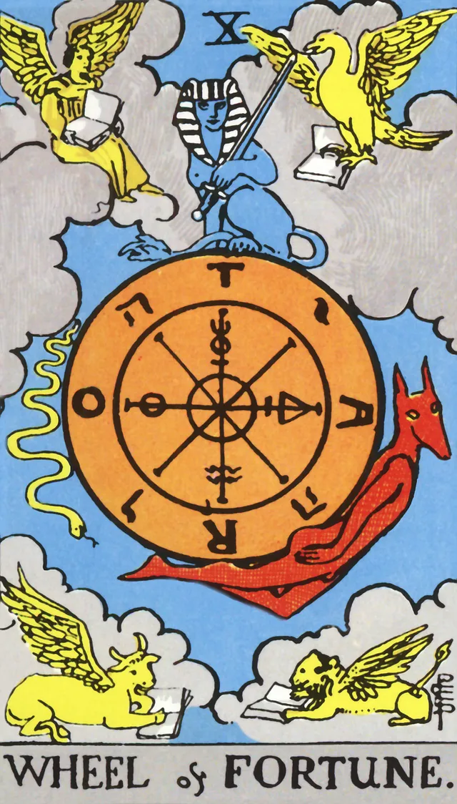
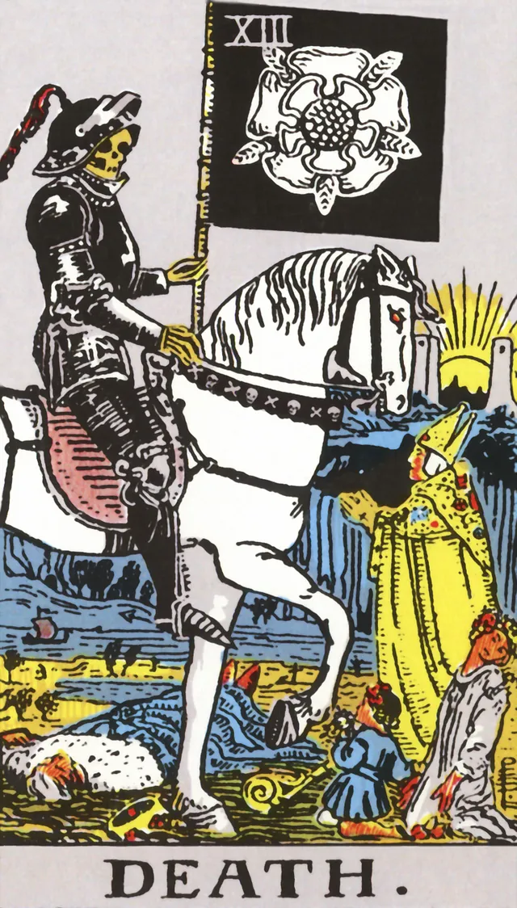
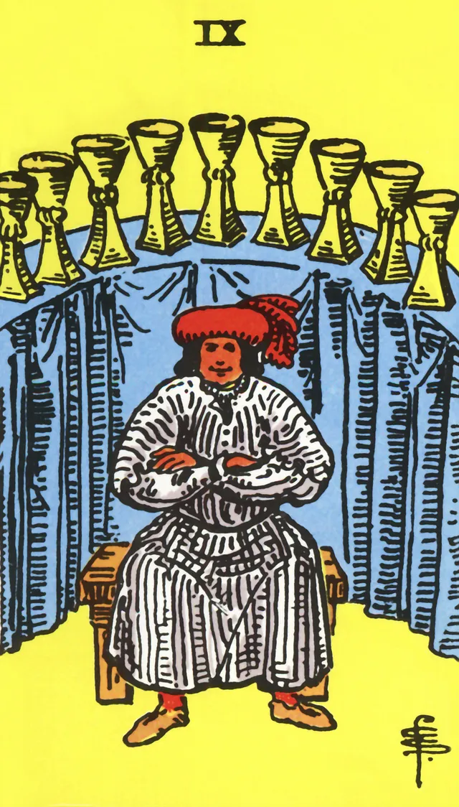
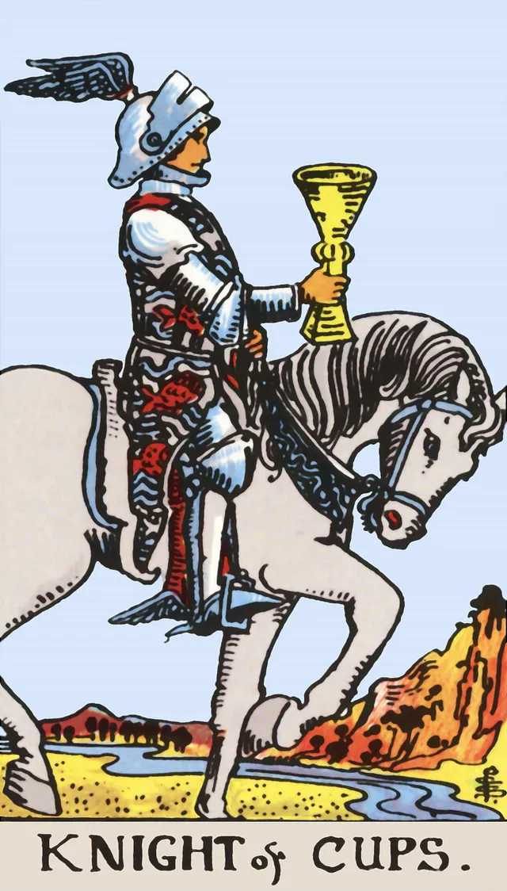
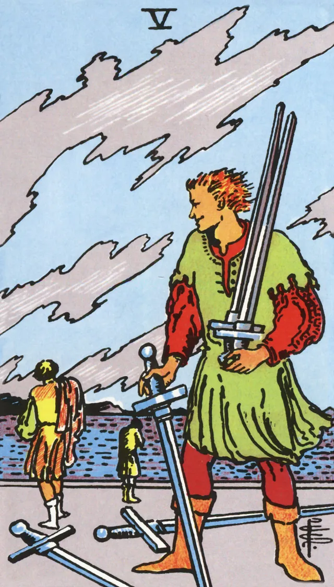
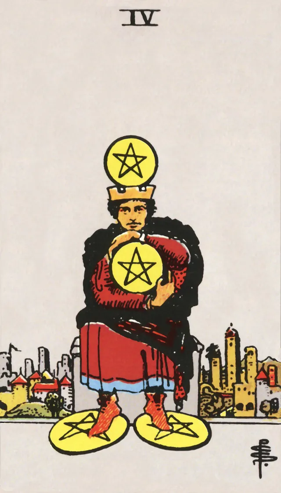
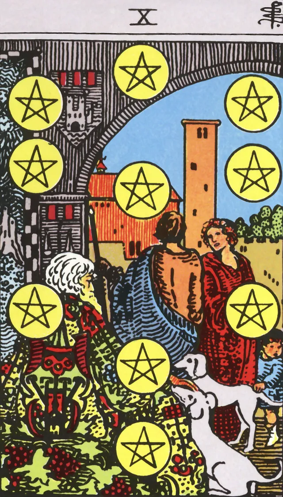

Arcanos Maiores
O Louco
Inicio, potencial puro, liberdade. Representa o espirito livre.
O Mago

Significado simbolico de o mago.
A Sacerdotisa
Significado simbolico de a sacerdotisa.
A Imperatriz
Significado simbolico de a imperatriz.
O Imperador
Significado simbolico de o imperador.
O Hierofante
Significado simbolico de o hierofante.
Os Amantes
Significado simbolico de os amantes.
O Carro
Significado simbolico de o carro.
A Forca
Significado simbolico de a forca.
O Eremita
Significado simbolico de o eremita.
A Roda da Fortuna
Significado simbolico de a roda da fortuna.
A Justica
Significado simbolico de a justica.
O Enforcado
Significado simbolico de o enforcado.
A Morte
Significado simbolico de a morte.
A Temperanca
Significado simbolico de a temperanca.
O Diabo
Significado simbolico de o diabo.
A Torre
Significado simbolico de a torre.
A Estrela
Significado simbolico de a estrela.
A Lua

Significado simbolico de a lua.
O Sol
Significado simbolico de o sol.
O Julgamento
Significado simbolico de o julgamento.
O Mundo
Significado simbolico de o mundo.
Arcanos Menores
Naipe de Paus
As de Paus

Significado simbolico de as de paus.
Dois de Paus
Significado simbolico de dois de paus.
Tres de Paus
Significado simbolico de tres de paus.
Quatro de Paus
Significado simbolico de quatro de paus.
Cinco de Paus
Significado simbolico de cinco de paus.
Seis de Paus
Significado simbolico de seis de paus.
Sete de Paus
Significado simbolico de sete de paus.
Oito de Paus
Significado simbolico de oito de paus.
Nove de Paus
Significado simbolico de nove de paus.
Dez de Paus
Significado simbolico de dez de paus.
Valete de Paus
Significado simbolico de valete de paus.
Cavaleiro de Paus
Significado simbolico de cavaleiro de paus.
Rainha de Paus
Significado simbolico de rainha de paus.
Rei de Paus
Significado simbolico de rei de paus.
Naipe de Copas
As de Copas
Significado simbolico de as de copas.
Dois de Copas
Significado simbolico de dois de copas.
Tres de Copas
Significado simbolico de tres de copas.
Quatro de Copas
Significado simbolico de quatro de copas.
Cinco de Copas
Significado simbolico de cinco de copas.
Seis de Copas
Significado simbolico de seis de copas.
Sete de Copas

Significado simbolico de sete de copas.
Oito de Copas
Significado simbolico de oito de copas.
Nove de Copas
Significado simbolico de nove de copas.
Dez de Copas
Significado simbolico de dez de copas.
Valete de Copas
Significado simbolico de valete de copas.
Cavaleiro de Copas
Significado simbolico de cavaleiro de copas.
Rainha de Copas
Significado simbolico de rainha de copas.
Rei de Copas
Significado simbolico de rei de copas.
Naipe de Espadas
As de Espadas
Significado simbolico de as de espadas.
Dois de Espadas
Significado simbolico de dois de espadas.
Tres de Espadas
Significado simbolico de tres de espadas.
Quatro de Espadas
Significado simbolico de quatro de espadas.
Cinco de Espadas
Significado simbolico de cinco de espadas.
Seis de Espadas
Significado simbolico de seis de espadas.
Sete de Espadas
Significado simbolico de sete de espadas.
Oito de Espadas
Significado simbolico de oito de espadas.
Nove de Espadas
Significado simbolico de nove de espadas.
Dez de Espadas
Significado simbolico de dez de espadas.
Valete de Espadas
Significado simbolico de Valete de espadas.
Cavaleiro de Espadas
Significado simbolico de cavaleiro de espadas.
Rainha de Espadas
Significado simbolico de rainha de espadas.
Rei de Espadas
Significado simbolico de rei de espadas.
Naipe de Ouros
As de Ouros
Significado simbolico de as de ouros.
Dois de Ouros
Significado simbolico de dois de ouros.
Tres de Ouros
Significado simbolico de tres de ouros.
Quatro de Ouros
Significado simbolico de quatro de ouros.
Cinco de Ouros
Significado simbolico de cinco de ouros.
Seis de Ouros
Significado simbolico de seis de ouros.
Sete de Ouros
Significado simbolico de sete de ouros.
Oito de Ouros
Significado simbolico de oito de ouros.
Nove de Ouros

Significado simbolico de nove de ouros.
Dez de Ouros
Significado simbolico de dez de ouros.
Valete de Ouros
Significado simbolico de Valete de ouros.
Cavaleiro de Ouros
Significado simbolico de cavaleiro de ouros.
Rainha de Ouros
Significado simbolico de rainha de ouros.
Rei de Ouros
Significado simbolico de rei de ouros.